完整原題
作答所需文章／材料
2025北海岸國際風箏節9月20日在新北市石門區舉辦，石門地處沿海四季都有海風吹送，是一處適合放風箏的優質地點，因而有臺灣「風箏故鄉」之稱。主辦單位邀請國內外專業風箏團隊參與盛會，展示各種造型風箏、特技風箏。想要讓手中的風箏翱翔天際，最好在放風箏前確認風向，選擇風力充足的時候，手拿風箏提線並逆風向前跑動，直到感覺風箏有拉力並向上爬升，再慢慢放線，活動當天現場測得風向為「東南風」。圖（九）是此場節慶的場地規劃圖。地理第44題｜從風箏活動配置圖讀取資訊
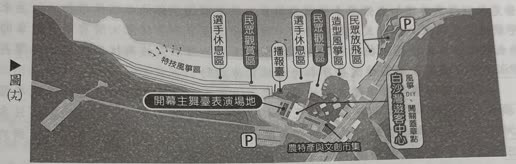
地理第45題｜東南風與逆風跑動方向
歷史第46題｜北部人文行程與史前文化分布
先想一想，再查看答案、解說與原圖
地理第44題｜從風箏活動配置圖讀取資訊
分享原卷｜第44題 · 對話建立日期（Created） 2026-09-05 · 原AI對話 ↗
逐項解析
| 選項與原句 | 判讀 | 句意與判斷理由 |
|---|---|---|
| (A) 特技風箏區位在造型風箏區的東側 | 不選 | 與圖中兩區的相對位置不合。 |
| (B) 民眾放飛區可眺望臺灣海峽的風光 | 不選 | 圖中未標示海域名稱，不能據此得到該資訊。 |
| (C) 遊客中心緊鄰開幕主舞臺表演場地 | 應選 | 中心與主舞臺的相鄰關係可由圖直接讀出。 |
| (D) 農特產與文創市集到播報臺的實際距離 | 不選 | 缺比例尺，無法計算實際距離。 |
詳細說明與解題步驟
【選圖上能直接看出的資訊】
圖中標示白沙灣遊客中心與開幕主舞臺表演場地，兩者相鄰，C是由圖面配置可直接讀取的資訊，因此選C。
【其他選項】
A：特技風箏區在圖面左側，造型風箏區在較右側；依一般地圖上北下南的讀法，不能把特技區說成在造型區東側。
B：圖中沒有標海域名稱，不能只靠場地配置圖得出「臺灣海峽」的資訊；本題也不是問憑地理常識猜海域。
D：沒有比例尺或已知實際長度，不能從簡圖算出農特產與文創市集到播報臺的實際距離。
【來源AI訂正】
原AI先選B，誤判遊客中心與舞臺相距很遠，後來才改C。本頁依原圖標示與相鄰位置選C；不採原AI自行補出的海域名稱或對圖面的錯誤描述。
新製配置關係示意；不補原圖沒有的北箭、比例尺或海域名稱。
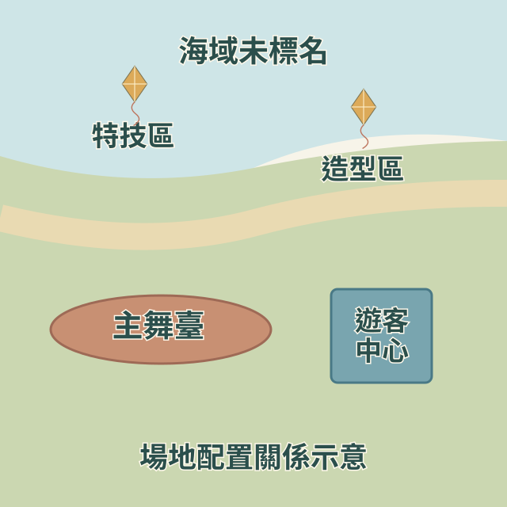
① 只用圖上有的資訊
原圖將白沙灣遊客中心與開幕主舞臺表演場地標在鄰近位置。先看標示與相對配置，不替未標名海域補上名稱。
主舞臺與遊客中心的相鄰示意，不是實景立面。
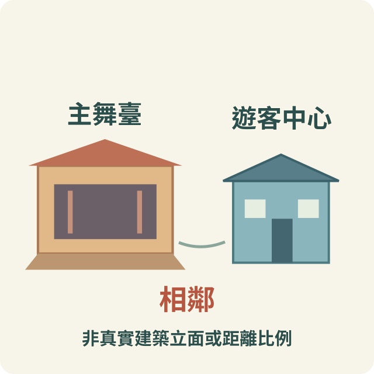
② 相鄰關係直接可讀
選項C說遊客中心緊鄰主舞臺，這是原圖可直接讀取的關係。建築小景只幫助理解相鄰，不表示真的長這樣或相隔幾公尺。
虛線連接只示待求距離，不是道路或實測長度。
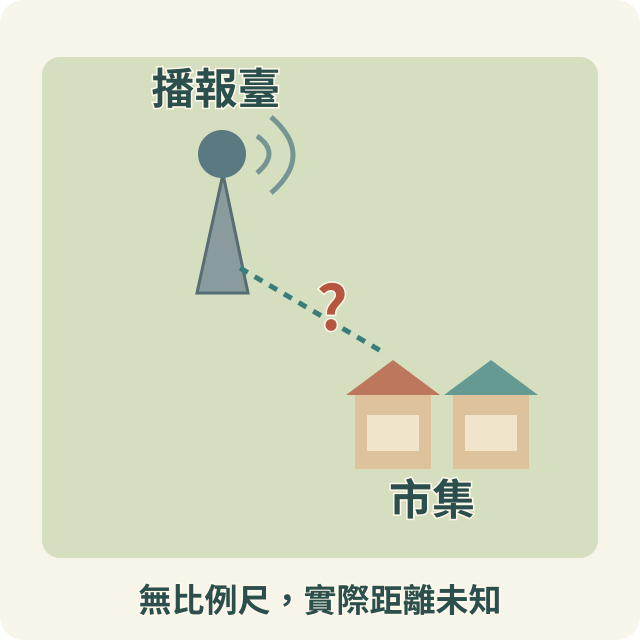
③ 無比例尺不能算實際距離
市集和播報臺在圖上各有位置，但題圖沒有比例尺或已知實際長度，無法求兩地的實際距離，因此D不合。
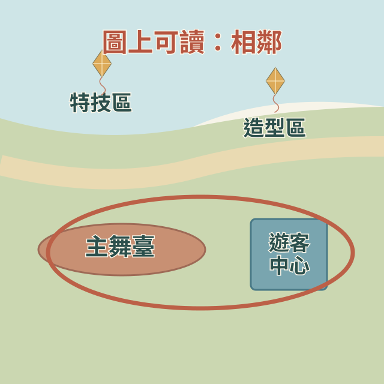
④ 配置圖能讀相鄰，不能補未知資訊
答案 C：遊客中心緊鄰主舞臺
- 圖上標示與相鄰位置能直接讀出。
- 原圖未標海域名稱，不能由配置圖自行補出臺灣海峽。
- 沒有比例尺，不能求市集到播報臺的實際距離。
核對註記：已依原卷或完整文字核對並獨立解題；對應教材課次未確認，歸綜合。
原圖（僅本題）
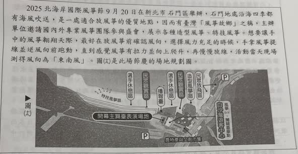
地理第45題｜東南風與逆風跑動方向
分享原卷｜第45題 · 對話建立日期（Created） 2026-09-05 · 原AI對話 ↗
逐項解析
| 選項與原句 | 判讀 | 句意與判斷理由 |
|---|---|---|
| (A) 東南方 | 應選 | 朝東南迎向東南方來風，符合逆風。 |
| (B) 西南方 | 不選 | 不是題文東南風的來源方向。 |
| (C) 東北方 | 不選 | 不是東南來風的來源方向。 |
| (D) 西北方 | 不選 | 是風主要吹去的方向，不是迎風跑。 |
詳細說明與解題步驟
【風向是風吹來的方向】
題文給的是東南風，表示風從東南方吹向西北方。
【逆風就是朝風來的方向前進】
題文要求手拿提線、逆風向前跑動，因此人應朝東南方跑，迎向來風，選A。
不要把風吹去的西北方當成風向名稱，也不要選順風跑的方向。
北上東右；藍箭頭表示空氣移動，不表示人跑動。
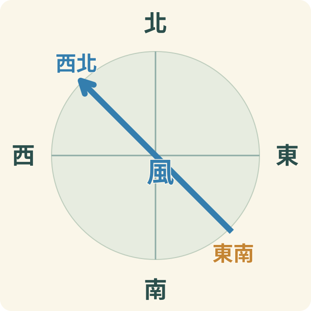
① 風名看風吹來的方向
共同題文給東南風，表示從東南吹向西北。第一圖藍箭尾在東南，箭頭朝西北；不要把吹去的方向當風名。
藍風與橘色跑動箭頭分開，兩者精確反向。
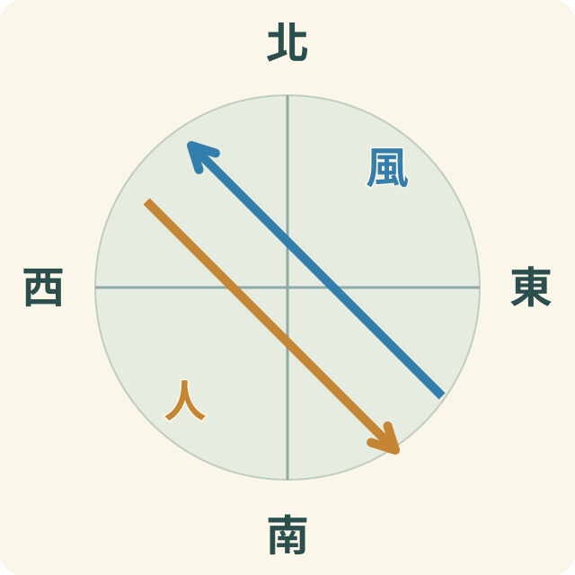
② 逆風跑，方向與風相反
題文要求逆風向前跑。藍風往西北，橘色人的跑動便朝相反的東南，迎向來風，所以選A。
俯視方位示意，不是升力、風速或高度測量。
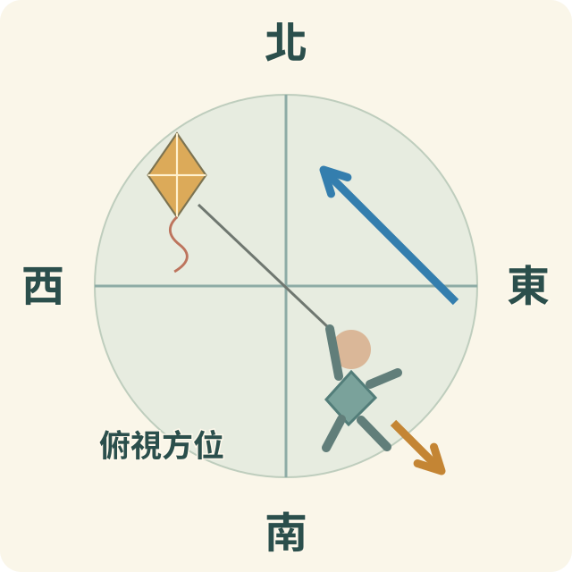
③ 方位圖不是高度或風速圖
俯視圖把風箏畫在人物西北側，提線接到手邊，人朝東南跑。畫面只說明方位，不用北海岸或活動月份另猜季風。
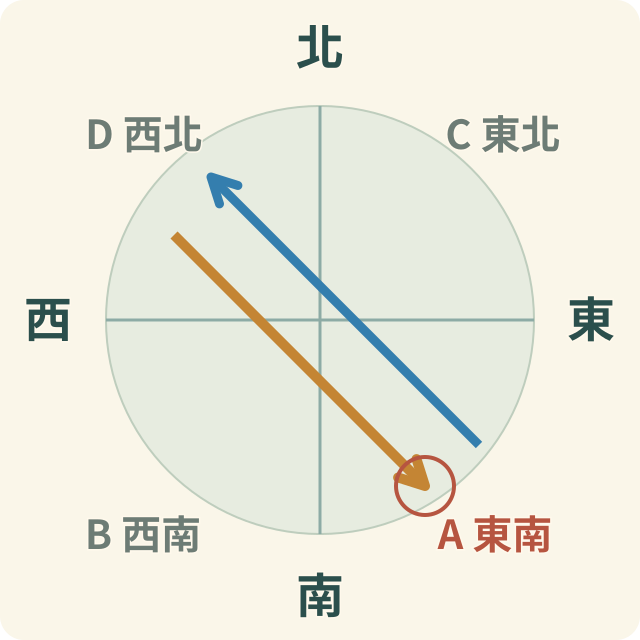
④ 東南風往西北，逆風跑向東南
答案 A：東南方
- 東南風：東南 → 西北。
- 逆風跑：迎向東南來風。
- 依題文現場風向，不把西北吹去方向選成迎風跑方向。
核對註記：已依原卷或完整文字核對並獨立解題；對應教材課次未確認，歸綜合。
原圖（僅本題）
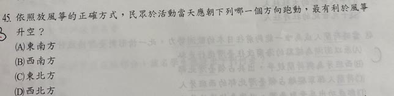
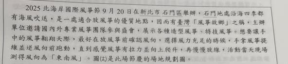
歷史第46題｜北部人文行程與史前文化分布
分享原卷｜第46題 · 對話建立日期（Created） 2026-09-05 · 原AI對話 ↗
逐項解析
| 選項與原句 | 判讀 | 句意與判斷理由 |
|---|---|---|
| (A) 長濱文化 | 應選 | 代表遺址在臺東長濱，離石門遠，最不宜就近安排。 |
| (B) 圓山文化 | 不選 | 代表遺址在臺北，屬北部。 |
| (C) 十三行文化 | 不選 | 代表遺址在新北八里，屬北部。 |
| (D) 大坌坑文化 | 不選 | 代表遺址在新北八里一帶，屬北部。 |
詳細說明與解題步驟
【先找活動地點與否定詞】
共同題文的活動在新北市石門區，問的是放完風箏後「就近」參觀，而且要選「不宜」列入的行程。
【比較四個文化的代表遺址】
長濱文化的代表遺址八仙洞在臺東長濱，距離新北石門較遠，因此A最不符合就近的條件。
圓山文化的代表遺址在臺北；十三行及大坌坑的代表遺址在新北八里，均屬北部，較符合本題安排。
【不要把文化年代與距離混為一談】
這題不是問哪個文化最早或最晚，而是用活動地點判斷附近的文化行程。就近只是題目中的相對比較，不必額外猜實際車程。
橙點示石門區位，不是精測活動座標。
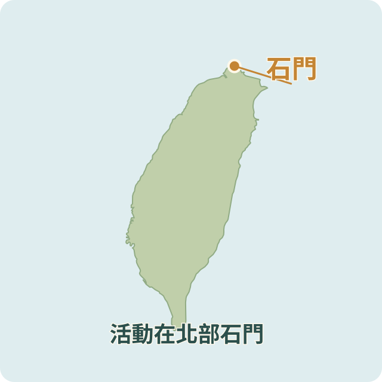
① 活動在新北石門
共同題文說活動在新北市石門區。第一圖用橙點概示北部石門，題目要同時抓住就近與不宜兩個條件。
以臺北、八里概略區位比較；不把代表遺址當文化完整分布。
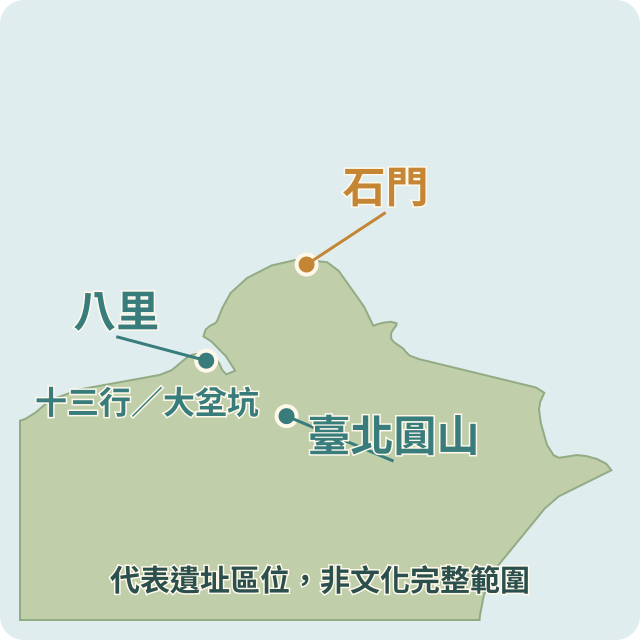
② 三個選項的代表遺址在北部
圓山文化的代表遺址在臺北；十三行與大坌坑的代表遺址在新北八里。B、C、D均屬北部，比較符合本題相對就近。
直線只比較區位，不是道路、公里或車程。
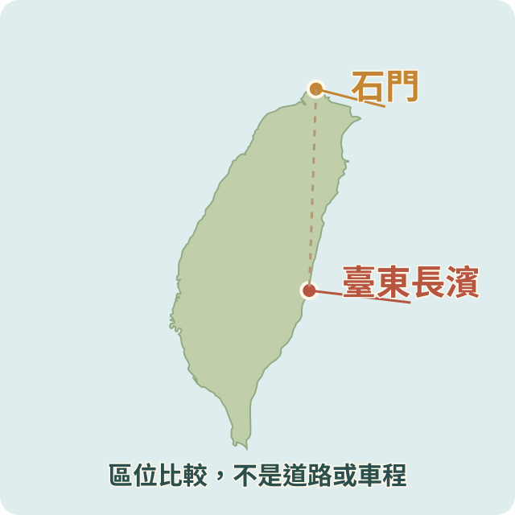
③ 長濱文化代表遺址在臺東
長濱文化的代表遺址八仙洞在臺東長濱。相較其他北部選項，長濱離石門較遠，因此A最不符合就近的條件。
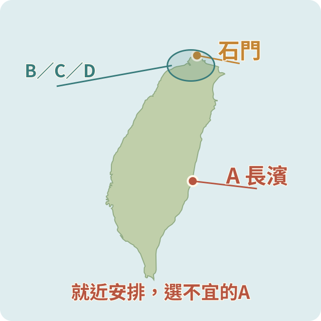
④ 以石門為起點，比較就近與不宜
答案 A：長濱文化
- 題目問不宜就近安排的一項。
- 圓山、十三行、大坌坑的代表遺址在北部；八仙洞在臺東長濱。
- 比較代表遺址區位，不是文化年代或整體分布範圍。
核對註記：已依原卷或完整文字核對並獨立解題；對應教材課次未確認，歸綜合。
原圖（僅本題）
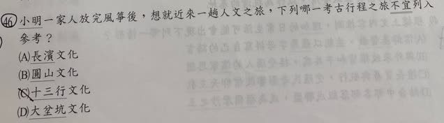